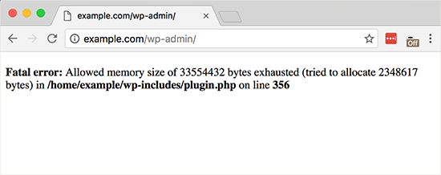

FAQs & Issues
Installation and Setup
The package could not be installed. the theme is missing the style.css stylesheet ?
A common issue that can occur with users new to installing WordPress themes is a "Broken theme and/or stylesheets missing” error message being displayed when trying to upload or activate the theme. This error message does not mean that the theme you have purchased is broken, it simply means it has been uploaded incorrectly. Luckily, there is a very easy fix : link to fix.
Upload issue, Are you sure you want to do this ?
While uploading the theme if you see an issue like the image below

It means that the upload limit of your server is less than the size of the theme. The theme size is around ~32mb, so make sure the upload limit of your server is more than this.
You may need to contact your hosting company or web host and ask them to increase this limit. Other alternatives include installation via FTP and installation via cPanel
White screen or Fatal Error ?
- PHP version 5.3 or less
- PHP memory limit less than 128 mb or less than the server requirements. how to check this ?
- Check your file persmission(set as 644) and folder permission(755)
White screen, debugging PHP memory requirements ?
WPLMS is a theme which has a lot of features. Each of these features consume PHP memory. The PHP memory consumption also increases with the number of users online in your site. Therefore we can not precisely suggest how much PHP memory can be required by your site. This faq will tell you how to detect PHP memory requirements for your site ? When you see a white screen on your site, ask for the PHP error log from your web host. If you see a fatal error, you get the same error in the browser screen that is recorded in the PHP error log.
Ajax Error ?
While setting up the theme, if you found an ajax error, this is not an error if it is visible on few. while installing plugins some plugins redirects, so we stop those redirections. You can ignore this and continue setting up your theme.
Slider is not Visible
If Your Slider is not visible, you can swich the demo through demo switcher. Refer : Link
Course Image Missing
Sometimes it may happen that your course image is missing. This happens due to id mismatch. To resolve this issue, go to wp-admin > All courses > edit course > Set feature Image and save your course.
Others
Take this course button redirecting to 404 page
First check your course status page is set or not from wp-admin > settings > Buddypress > Pages. If page is set then go to settings > permalinks > click on save permalinks. Sometimes redirection of a page on 404 occur due to permalinks.
Like WPLMS ?
Rate us at Themeforest
Every rating counts and helps us to improve WPLMS. How to rate WPLMS ?
Not Happy ?
Send us an email at vibethemes@gmail.com and share feedback.